Code
library(ggplot2)
mytheme <- theme(
text = element_text(size = 16,
family = "STKaiti"),
axis.title = element_text(size = 20)
)library(ggplot2)
mytheme <- theme(
text = element_text(size = 16,
family = "STKaiti"),
axis.title = element_text(size = 20)
)load("../Output/chapter4.RData")library(dplyr)
library(gridExtra)
library(RColorBrewer)d <- data3_2 %>% select(支出项目,北京) %>% rename(支出金额=北京) %>%
arrange(desc(支出金额))
head(d) 支出项目 支出金额
1 居住 17163.1
2 食品烟酒 8751.4
3 交通通信 3925.2
4 医疗保健 3755.0
5 教育文化娱乐 3020.7
6 生活用品及服务 2306.7# 计算累积百分比
d$累积百分比 <- round(cumsum(d$支出金额)/sum(d$支出金额),4)*100ggplot(d,aes(x=支出项目,y=支出金额))+
geom_col()+
geom_text(aes(label = 支出金额),nudge_y = 1000)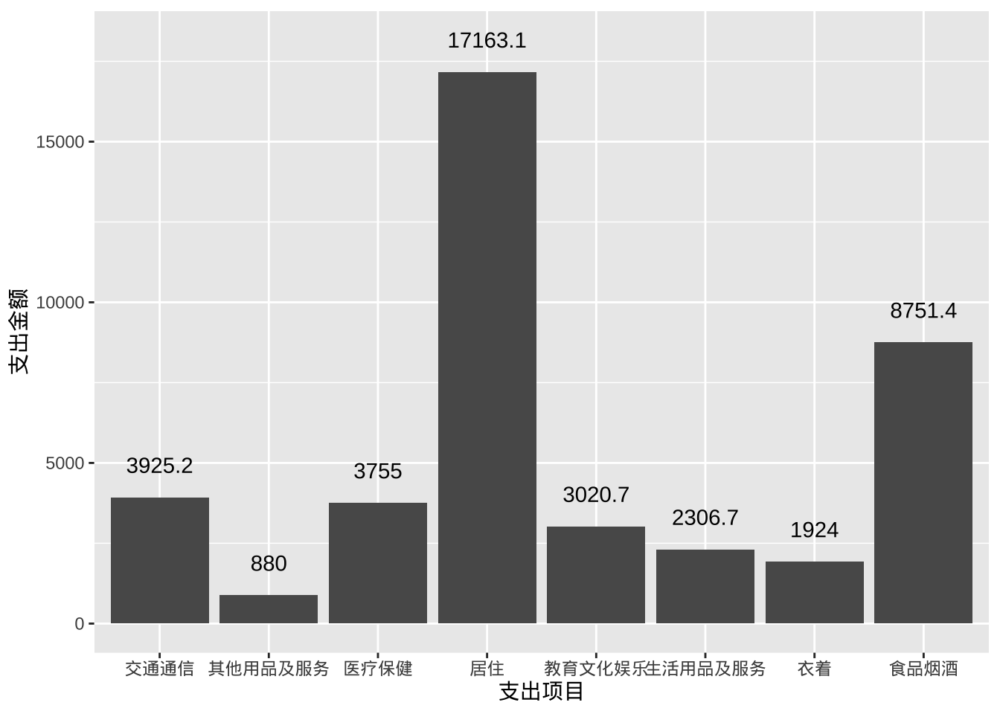
d2 <- d
d2$支出项目 <- factor(d2$支出项目,ordered = T,levels = d$支出项目)ggplot(d2,aes(x=支出项目,y=支出金额))+
geom_col()+
geom_text(aes(label = 支出金额),nudge_y = 1000)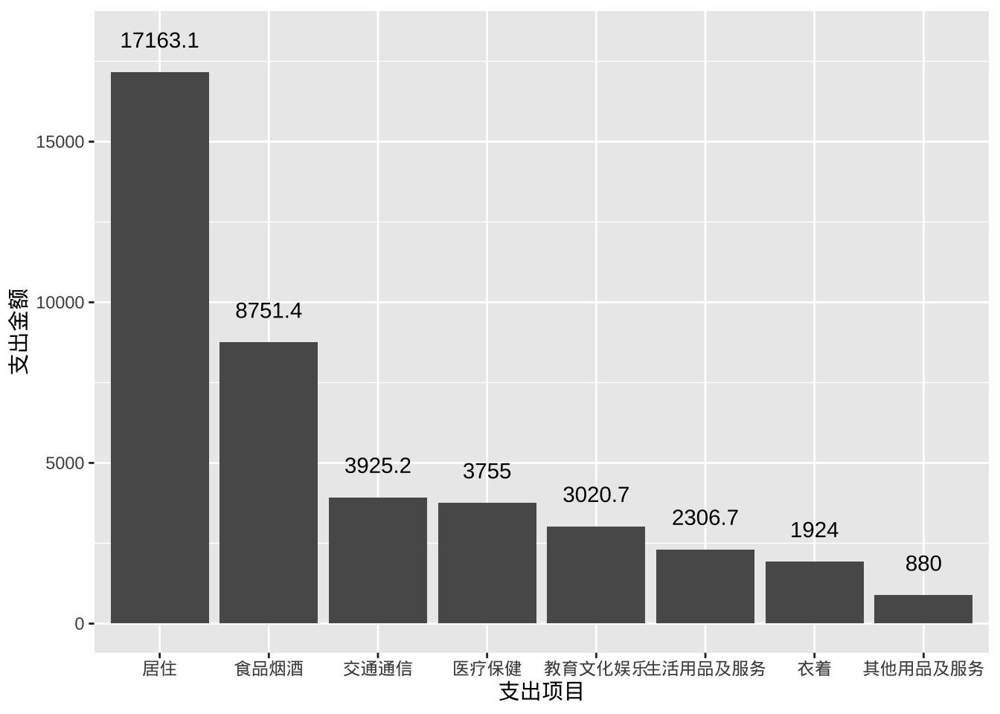
p1 <- ggplot(d2,aes(x=支出项目,y=支出金额))+
geom_col(aes(fill=支出项目))+
geom_text(aes(label = 支出金额),nudge_y = 1000)+
scale_fill_brewer(palette = "Reds",direction = -1)
p1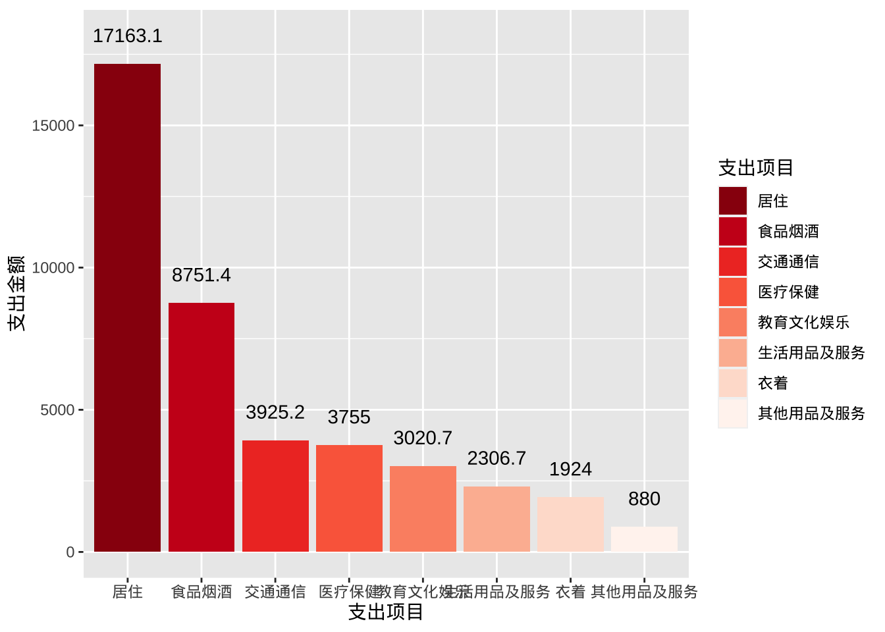
p1+geom_line(aes(x=as.numeric(支出项目),y=累积百分比*max(支出金额/100)))+
geom_point(aes(x=as.numeric(支出项目),y=累积百分比*max(支出金额/100)))+
scale_y_continuous(sec.axis = sec_axis(~./max(d2$支出金额/100)))+
annotate("text",x=8.3,y=10000,label="百分比(%)",angle=90)+
annotate("text",x=5,y=13500,label="累积百分比曲线")ggplot(d2,aes(x=as.numeric(支出项目),y=累积百分比))+
geom_line()+
geom_point()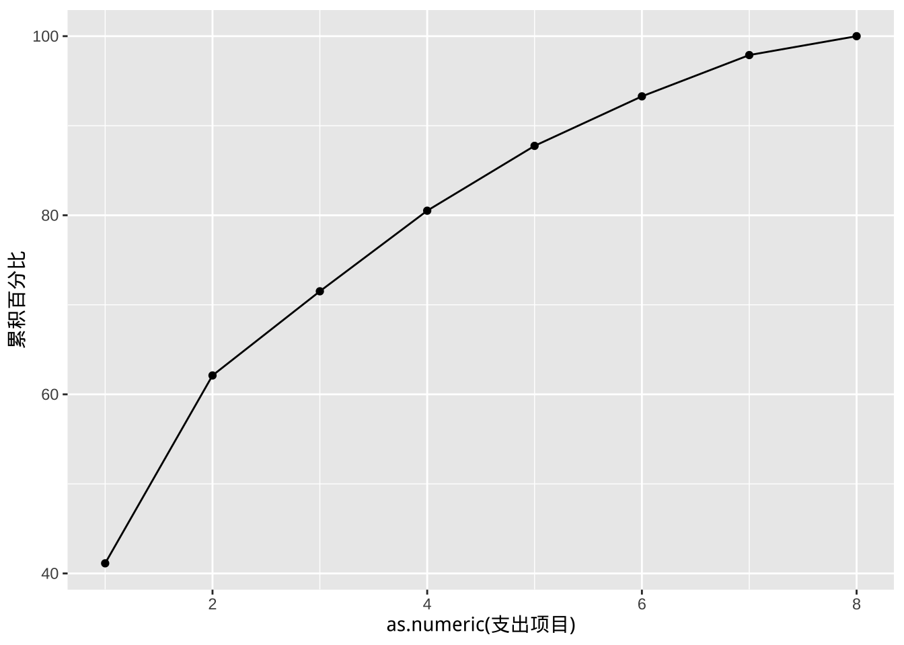
ggplot(data3_1,aes(x=满意度,fill=网购原因))+
geom_bar()+
stat_count(aes(label=after_stat(count)),geom = "text",position = position_stack(0.5))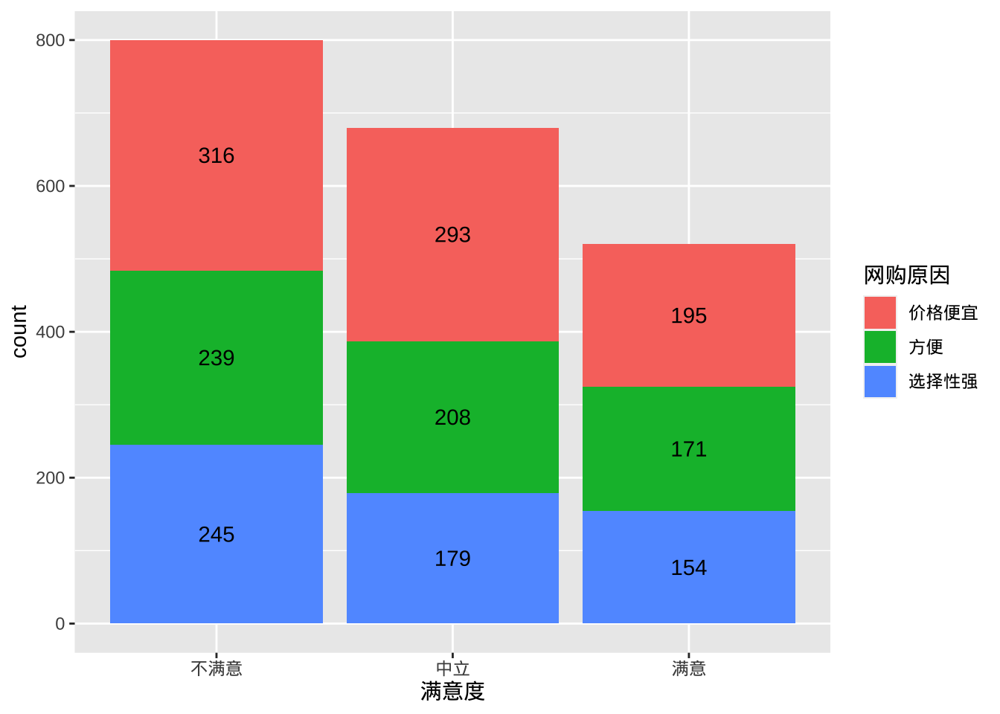
library(ggiraphExtra)不等宽堆叠条形图
ggSpine(data3_1,aes(x=满意度,fill=网购原因))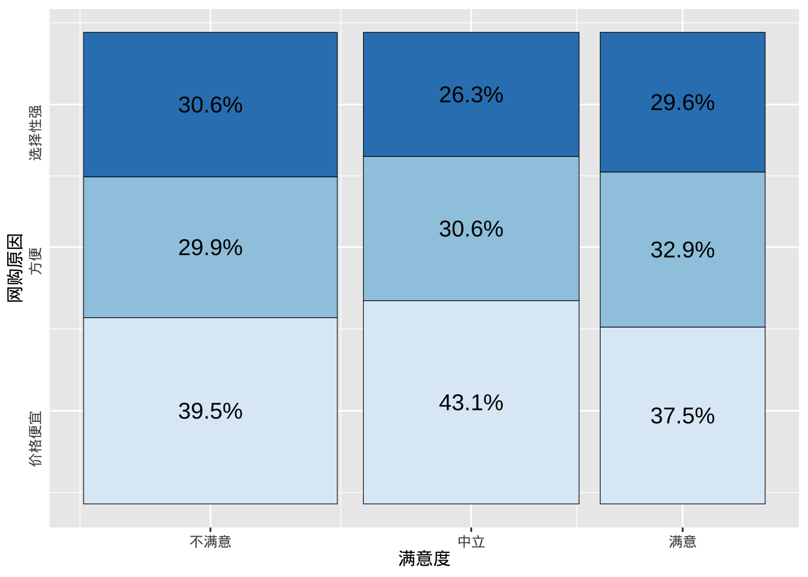
不等宽并列条形图
ggSpine(data3_1,aes(x=满意度,fill=网购原因),position = "dodge")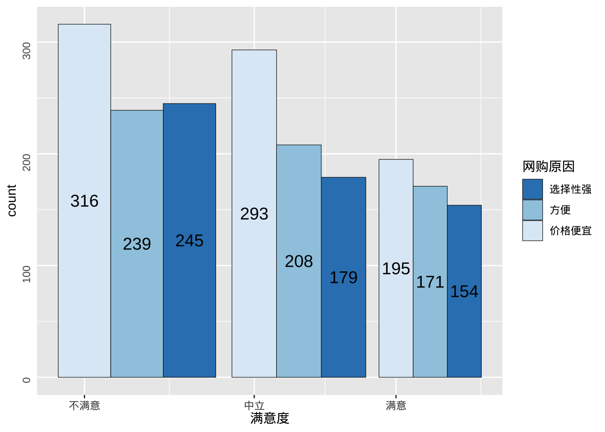
ggplot(data3_1,aes(x=满意度,fill=性别))+
geom_bar()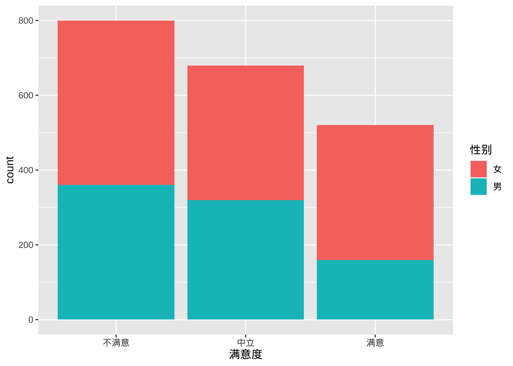
data3_1 %>% select(满意度,性别) %>% table() %>% as.data.frame() %>%
group_by(满意度) %>%
mutate(percent=Freq/sum(Freq)) %>% ungroup() %>%
ggplot(aes(x=满意度,y=percent,fill=性别))+
geom_bar(stat = "identity")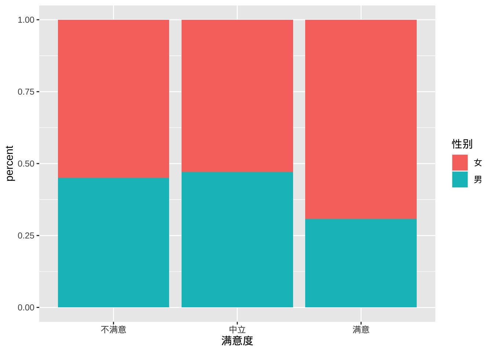
data2_1 <- read.csv("../Input/classdata/mydata/chap02/data2_1.csv")library(tidyr)df <- data2_1 %>% gather(key = "课程",value = "成绩",R语言,Python语言) %>%
group_by(课程) %>%
mutate(mean=mean(成绩),sd=sd(成绩),ymin=mean-sd,ymax=mean+sd) %>% select(课程,mean,sd,ymin,ymax) %>% unique()library(ggplot2)
library(RColorBrewer)
library(dplyr)ggplot(data3_2,aes(x=支出项目,y=北京))+
geom_bar(stat = "identity")
ggplot(data3_2,aes(x=支出项目,y=北京,
fill = 支出项目))+
geom_col()+
scale_fill_brewer(palette = "Reds",direction = -1)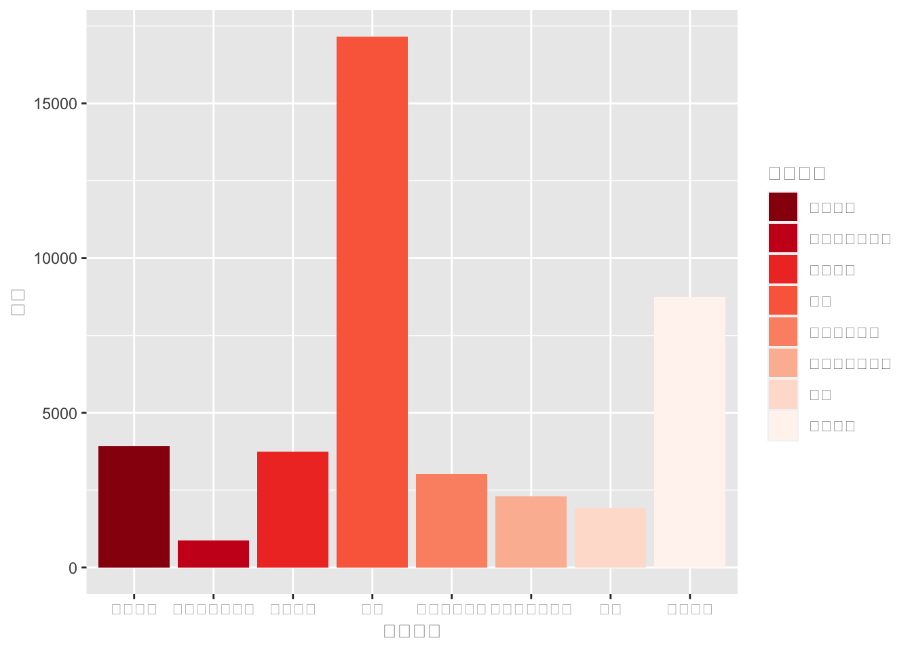
条形图降序排列
d1 <- data3_2 %>% select(支出项目,北京) %>%
arrange(desc(北京))d1$支出项目 <- factor(d1$支出项目,
ordered = T,
levels = d1$支出项目)ggplot(d1,aes(x=支出项目,y=北京))+
geom_col()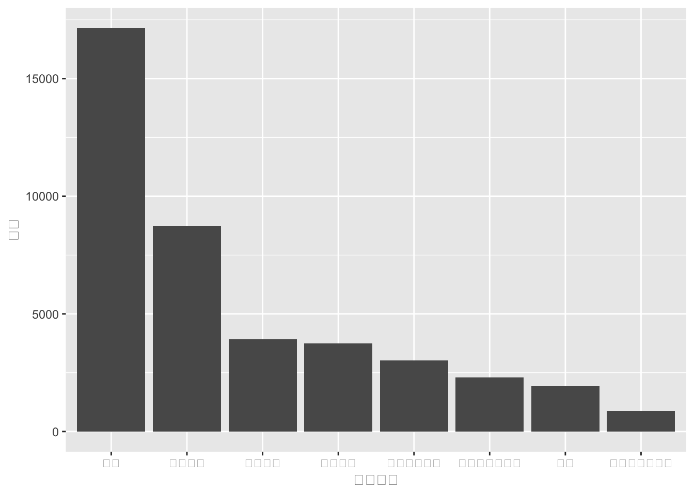
字体设置
mytheme <- theme(
text = element_text(family = "STKaiti")
)添加数据标签
ggplot(d1,aes(x=支出项目,y=北京))+
geom_col()+
geom_text(aes(label = 北京),vjust=-0.5)+
labs(y="支出金额\n(元)")+
mytheme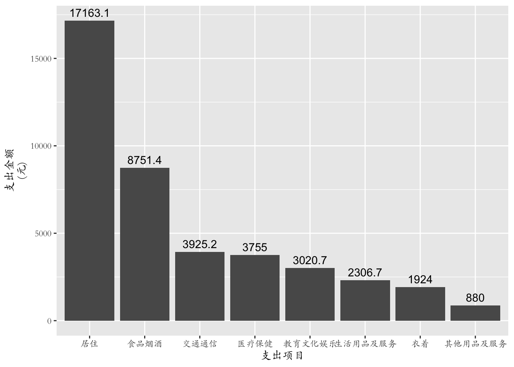
d1$累积百分比 <- round(cumsum(d1$北京)/sum(d1$北京),4)*100
head(d1) 支出项目 北京 累积百分比
1 居住 17163.1 41.13
2 食品烟酒 8751.4 62.11
3 交通通信 3925.2 71.51
4 医疗保健 3755.0 80.51
5 教育文化娱乐 3020.7 87.75
6 生活用品及服务 2306.7 93.28ggplot(d1,aes(x=as.numeric(支出项目),y=累积百分比))+
geom_line()+
geom_point()
ggplot(d1)+
geom_col(aes(x=支出项目,y=北京,fill=支出项目))+
scale_fill_brewer(palette = "Reds",direction = -1)+
geom_line(aes(x=as.numeric(支出项目),
y=累积百分比*max(北京/100)))+
scale_y_continuous(sec.axis = sec_axis(~./max(d1$北京/100)))+
annotate("text",x=8.3,y=10000,
label="百分比(%)",angle=90)+
annotate("text",x=6,y=13000,
label="累积百分比曲线")+
labs(y="支出金额(元)",
title = "2020年北京城镇居民人均消费支出的帕累托图")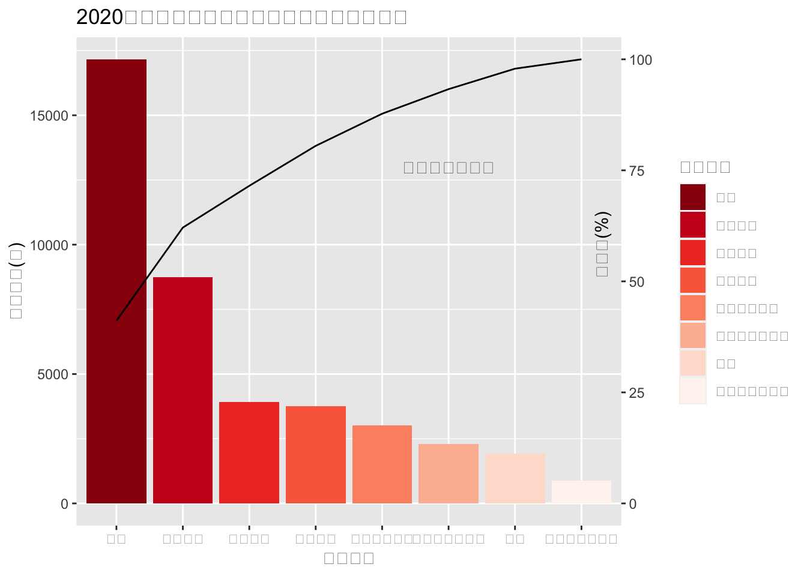
#install.packages("ggiraphExtra")
library(ggiraphExtra)ggSpine(data3_1,aes(x=满意度,fill=网购原因))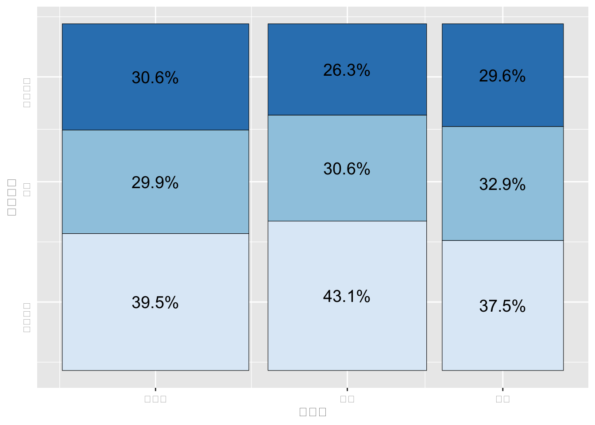
ggSpine(data3_1,aes(x=满意度,fill=网购原因),position = "dodge")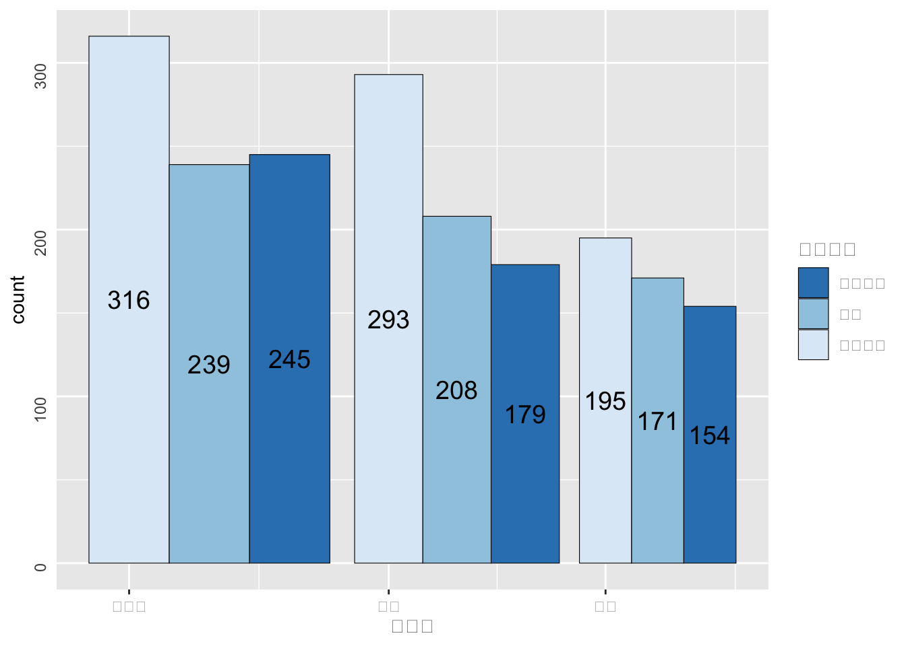
data2_1 <- read.csv("../Input/classdata/mydata/chap02/data2_1.csv")head(data2_1,3) 性别 专业 R语言 Python语言
1 男 金融 93 76
2 女 管理 90 73
3 男 金融 72 63# 计算平均值
apply(data2_1[,3:4],2,mean) R语言 Python语言
81.46 69.32 funy <- function(x) {
s_mean=mean(x)
s_sd=sd(x)
s_n=length(x)
s_sem=sd(x)/sqrt(length(x))
return(c(s_mean,s_sd,s_n,s_sem))
}d2 <- t(apply(data2_1[,3:4],2,funy))
colnames(d2) <- c("mean","sd","n","sem")
head(d2) mean sd n sem
R语言 81.46 6.676826 50 0.9442457
Python语言 69.32 5.905515 50 0.8351659library(tidyr)d3 <- data2_1 %>% gather(key="课程",value = "分数",R语言,Python语言) %>%
group_by(课程) %>%
mutate(mean=mean(分数),
sd=sd(分数),
n=length(分数),
sem=sd(分数)/sqrt(n)) %>%
select(课程,mean,sd,n,sem) %>% unique()ggplot(d3,aes(x=课程,y=mean,fill=课程))+
geom_col(width = 0.5)+
geom_errorbar(aes(ymin=mean-sd,ymax=mean+sd),width=0.3)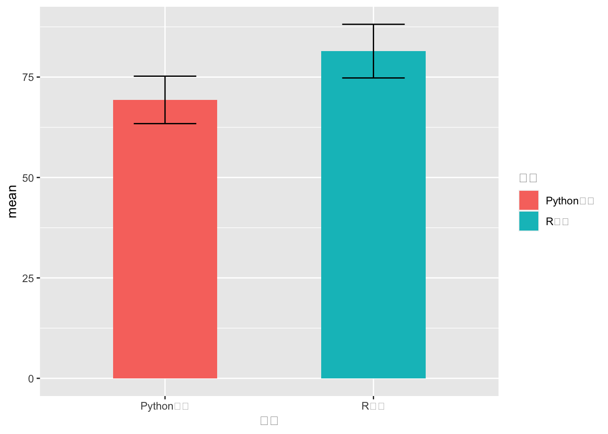
data2_1 %>% gather(key="课程",value = "分数",R语言,Python语言) %>%
group_by(课程,性别) %>%
mutate(mean=mean(分数),
sd=sd(分数),
n=length(分数),
sem=sd(分数)/sqrt(n)) %>%
ggplot(aes(x=课程,y=mean,fill=性别))+
geom_bar(stat = "identity",
position = "dodge")+
geom_errorbar(aes(ymin = mean-sd,
ymax = mean+sd),
width = 0.3,
position = position_dodge(0.9))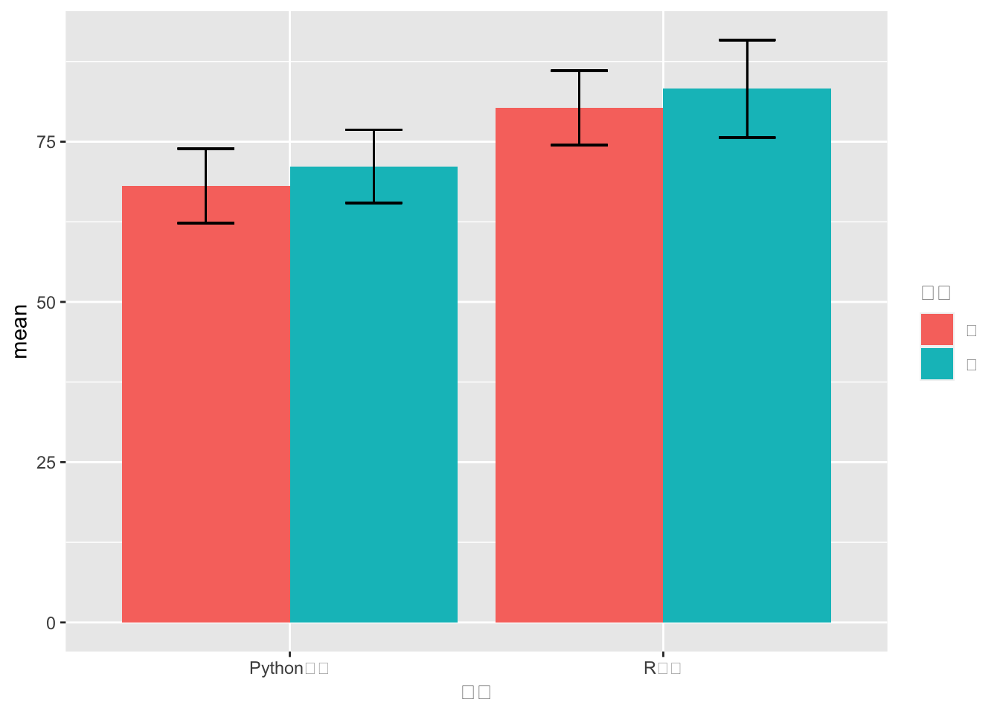
data2_1 %>% reframe(测试=R语言+Python语言) 测试
1 169
2 163
3 135
4 148
5 143
6 135
7 157
8 135
9 145
10 156
11 133
12 164
13 147
14 128
15 152
16 165
17 147
18 130
19 148
20 166
21 157
22 144
23 156
24 155
25 180
26 136
27 152
28 151
29 148
30 163
31 175
32 165
33 138
34 154
35 154
36 148
37 160
38 127
39 137
40 138
41 145
42 161
43 152
44 143
45 167
46 157
47 141
48 154
49 161
50 154library(plyr)
data2_1 %>% ddply("性别",summarize,
mean=mean(R语言)) 性别 mean
1 女 80.26667
2 男 83.25000library(reshape2)
data2_1 %>% melt(id.vars=c("性别","专业")) 性别 专业 variable value
1 男 金融 R语言 93
2 女 管理 R语言 90
3 男 金融 R语言 72
4 女 会计 R语言 81
5 女 管理 R语言 79
6 男 管理 R语言 72
7 女 管理 R语言 86
8 女 金融 R语言 74
9 女 管理 R语言 79
10 男 管理 R语言 83
11 女 管理 R语言 72
12 男 金融 R语言 89
13 女 金融 R语言 81
14 女 管理 R语言 72
15 男 会计 R语言 82
16 女 金融 R语言 88
17 男 管理 R语言 80
18 女 会计 R语言 73
19 男 会计 R语言 81
20 女 金融 R语言 92
21 女 管理 R语言 86
22 女 金融 R语言 79
23 男 管理 R语言 84
24 女 管理 R语言 84
25 男 金融 R语言 98
26 女 会计 R语言 76
27 女 会计 R语言 80
28 女 金融 R语言 81
29 女 会计 R语言 79
30 男 管理 R语言 88
31 男 金融 R语言 95
32 女 金融 R语言 88
33 男 管理 R语言 74
34 女 会计 R语言 81
35 女 金融 R语言 82
36 男 管理 R语言 79
37 女 管理 R语言 85
38 女 会计 R语言 69
39 女 会计 R语言 72
40 男 会计 R语言 73
41 女 管理 R语言 75
42 男 管理 R语言 88
43 女 金融 R语言 81
44 女 管理 R语言 76
45 男 管理 R语言 89
46 女 管理 R语言 84
47 男 会计 R语言 76
48 男 金融 R语言 83
49 男 金融 R语言 86
50 女 管理 R语言 83
51 男 金融 Python语言 76
52 女 管理 Python语言 73
53 男 金融 Python语言 63
54 女 会计 Python语言 67
55 女 管理 Python语言 64
56 男 管理 Python语言 63
57 女 管理 Python语言 71
58 女 金融 Python语言 61
59 女 管理 Python语言 66
60 男 管理 Python语言 73
61 女 管理 Python语言 61
62 男 金融 Python语言 75
63 女 金融 Python语言 66
64 女 管理 Python语言 56
65 男 会计 Python语言 70
66 女 金融 Python语言 77
67 男 管理 Python语言 67
68 女 会计 Python语言 57
69 男 会计 Python语言 67
70 女 金融 Python语言 74
71 女 管理 Python语言 71
72 女 金融 Python语言 65
73 男 管理 Python语言 72
74 女 管理 Python语言 71
75 男 金融 Python语言 82
76 女 会计 Python语言 60
77 女 会计 Python语言 72
78 女 金融 Python语言 70
79 女 会计 Python语言 69
80 男 管理 Python语言 75
81 男 金融 Python语言 80
82 女 金融 Python语言 77
83 男 管理 Python语言 64
84 女 会计 Python语言 73
85 女 金融 Python语言 72
86 男 管理 Python语言 69
87 女 管理 Python语言 75
88 女 会计 Python语言 58
89 女 会计 Python语言 65
90 男 会计 Python语言 65
91 女 管理 Python语言 70
92 男 管理 Python语言 73
93 女 金融 Python语言 71
94 女 管理 Python语言 67
95 男 管理 Python语言 78
96 女 管理 Python语言 73
97 男 会计 Python语言 65
98 男 金融 Python语言 71
99 男 金融 Python语言 75
100 女 管理 Python语言 71load("../Output/chapter4.RData")library(ggplot2) #绘图
library(dplyr) #数据操作
library(RColorBrewer) #调色板head(data3_2) 支出项目 北京 天津 上海 重庆
1 食品烟酒 8751.4 9122.2 11515.1 8618.8
2 衣着 1924.0 1860.4 1763.5 1918.0
3 居住 17163.1 7770.0 16465.1 4970.8
4 生活用品及服务 2306.7 1804.1 2177.5 1897.3
5 交通通信 3925.2 4045.7 4677.1 3290.8
6 教育文化娱乐 3020.7 2530.6 3962.6 2648.3ggplot(data3_2,aes(x=支出项目,y=北京))+
geom_bar(stat = "identity")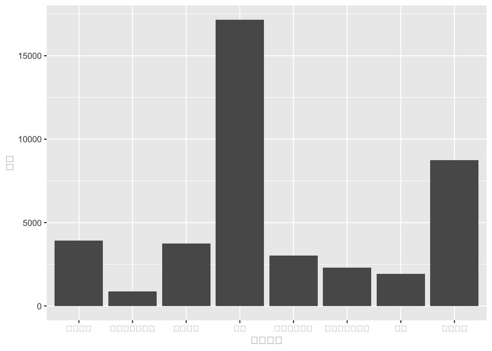
ggplot(data3_2,aes(x=支出项目,y=北京,
fill = 支出项目))+
geom_col()+
scale_fill_brewer(palette = "Reds",
direction = -1)
# library(dplyr)
df1 <- data3_2 %>% select(支出项目,北京) %>%
arrange(desc(北京))
head(df1) #查看数据前6行 支出项目 北京
1 居住 17163.1
2 食品烟酒 8751.4
3 交通通信 3925.2
4 医疗保健 3755.0
5 教育文化娱乐 3020.7
6 生活用品及服务 2306.7将支出项目作为有序因子，它的水平为降序计算后的水平,使得条形图实现降序排列
df1$支出项目 <- factor(df1$支出项目,
ordered = T,
levels = df1$支出项目)ggplot(df1,aes(x=支出项目,y=北京))+
geom_col()+
geom_text(aes(label = 北京),vjust=-0.5)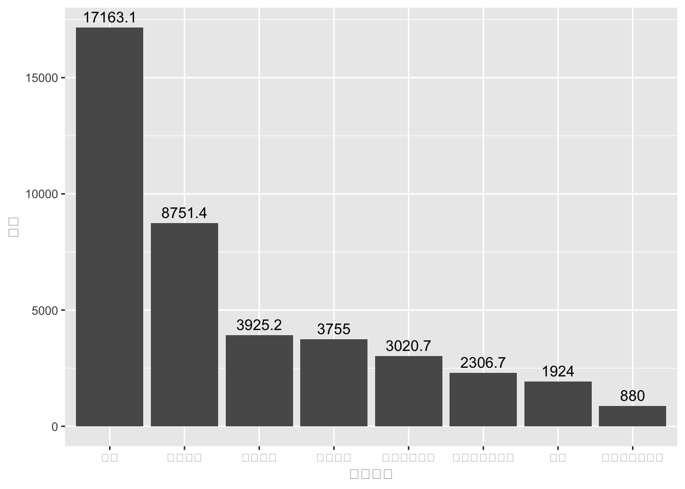
# 计算累积百分比
df1$累积百分比 <- round(cumsum(df1$北京)/sum(df1$北京),4)*100
head(df1) 支出项目 北京 累积百分比
1 居住 17163.1 41.13
2 食品烟酒 8751.4 62.11
3 交通通信 3925.2 71.51
4 医疗保健 3755.0 80.51
5 教育文化娱乐 3020.7 87.75
6 生活用品及服务 2306.7 93.28df1 %>%
ggplot(aes(x=as.numeric(支出项目),y=累积百分比))+
geom_line()+
geom_point()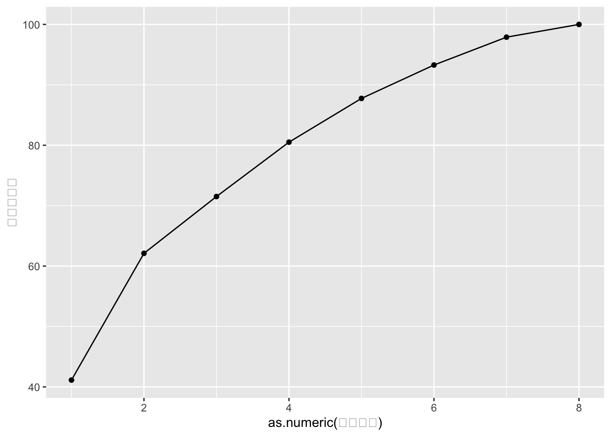
ggplot(df1)+
geom_col(aes(x=支出项目,y=北京,fill=支出项目))+
scale_fill_brewer(palette = "Reds",direction = -1)+
geom_line(aes(x=as.numeric(支出项目),y=累积百分比*max(北京)/100))+
geom_point(aes(x=as.numeric(支出项目),y=累积百分比*max(北京)/100))+
scale_y_continuous(
sec.axis = sec_axis(~./(max(df1$北京)/100))
)+
annotate("text",x=8.3,y=10000,
label="百分比(%)",angle=90)+
annotate("text",x=6,y=13000,
label="累积分布曲线")+
labs(y="支出金额\n(元)",
title = "2020年北京城镇居民人均消费支出的帕累托图")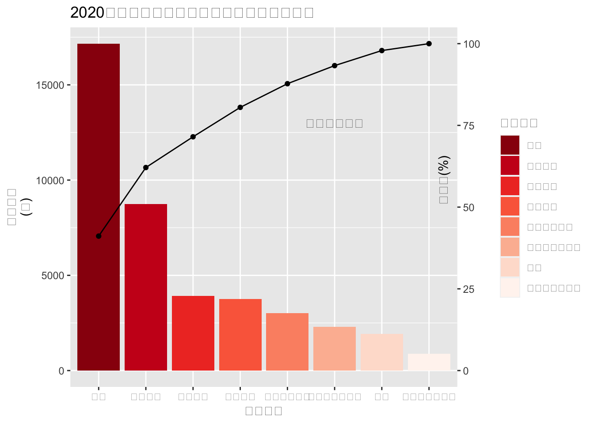
data2_1 <- read.csv("../Input/classdata/mydata/chap02/data2_1.csv")
head(data2_1,2) 性别 专业 R语言 Python语言
1 男 金融 93 76
2 女 管理 90 73apply(data2_1[,3:4],2,mean) R语言 Python语言
81.46 69.32 library(reshape2)
data2_1 %>% melt(
id.vars = c("性别","专业"),
variable.name = "课程",
value.name = "分数") %>% head() 性别 专业 课程 分数
1 男 金融 R语言 93
2 女 管理 R语言 90
3 男 金融 R语言 72
4 女 会计 R语言 81
5 女 管理 R语言 79
6 男 管理 R语言 72library(tidyr)
data2_1 %>% gather(key="课程",
value = "分数",R语言,Python语言) %>%
group_by(课程) %>%
mutate(n=length(分数))# A tibble: 100 × 5
# Groups: 课程 [2]
性别 专业 课程 分数 n
<chr> <chr> <chr> <int> <int>
1 男 金融 R语言 93 100
2 女 管理 R语言 90 100
3 男 金融 R语言 72 100
4 女 会计 R语言 81 100
5 女 管理 R语言 79 100
6 男 管理 R语言 72 100
7 女 管理 R语言 86 100
8 女 金融 R语言 74 100
9 女 管理 R语言 79 100
10 男 管理 R语言 83 100
# ℹ 90 more rowsapply(data2_1[,3:4], 2, mean) R语言 Python语言
81.46 69.32 funa <- function(x) {
s_mean=mean(x)
s_sd=sd(x)
s_n=length(x)
s_sem=sd(x)/sqrt(s_n)
return(c(s_mean,s_sd,s_n,s_sem))
}apply(data2_1[,3:4],2,funa) R语言 Python语言
[1,] 81.4600000 69.3200000
[2,] 6.6768256 5.9055145
[3,] 50.0000000 50.0000000
[4,] 0.9442457 0.8351659df2 <- as.data.frame(t(apply(data2_1[,3:4],2,funa)))
colnames(df2) <- c("mean","sd","n","sem")
df2$课程=factor(rownames(df2))
head(df2) mean sd n sem 课程
R语言 81.46 6.676826 50 0.9442457 R语言
Python语言 69.32 5.905515 50 0.8351659 Python语言误差线以标准差来显示
ggplot(df2,aes(x=课程,y=mean,fill=课程))+
geom_col(width = 0.8)+
geom_errorbar(aes(ymin = mean-sd,ymax = mean+sd),width=0.3)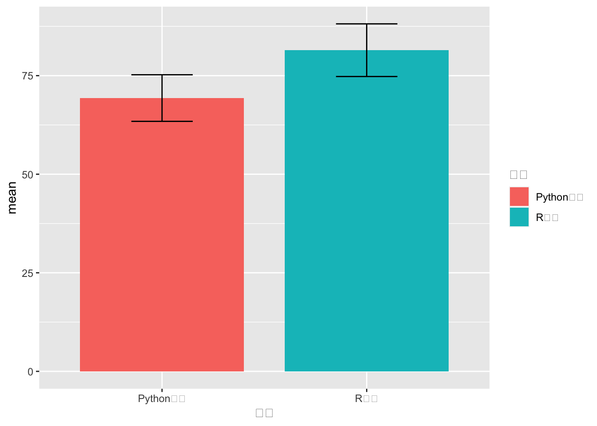
误差线以标准误来显示
ggplot(df2,aes(x=课程,y=mean,fill=课程))+
geom_col(width = 0.8)+
geom_errorbar(aes(ymin = mean-sem,ymax = mean+sem),width=0.3)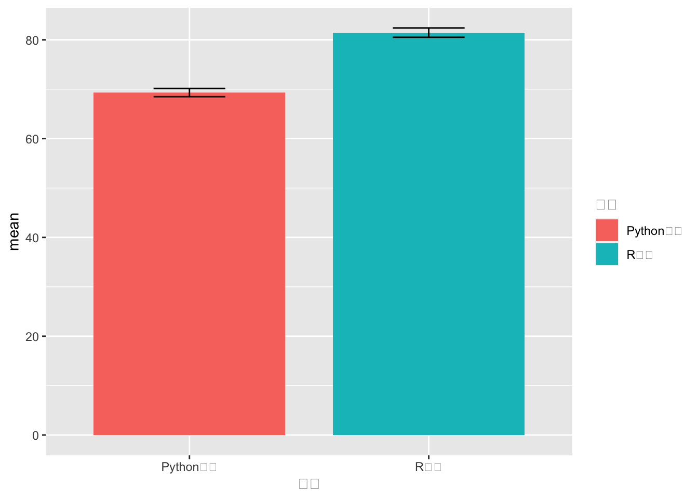